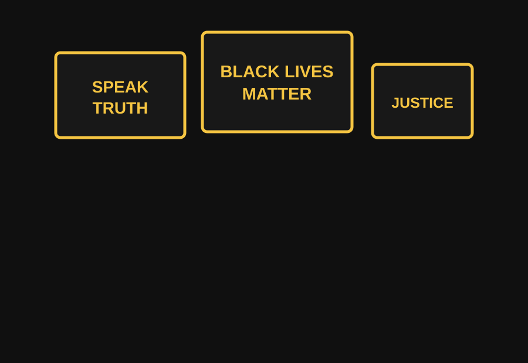

Textual
Slogans such as "Black Lives Matter" compress a moral argument into language that is memorable, repeatable, and direct.
Core Idea
Rhetoric is the strategic use of language, symbols, images, sound, and performance to influence an audience. In social movements, rhetoric helps people name injustice, build shared identity, and call for change.
Black Lives Matter shows how a short phrase can become a public argument. The slogan appears in hashtags, protest signs, speeches, murals, chants, videos, and classroom discussions.

Three Modes
Slogans such as "Black Lives Matter" compress a moral argument into language that is memorable, repeatable, and direct.
Images of protests, murals, raised fists, and signs turn abstract injustice into something visible and emotionally immediate.
Chants, speeches, silence, and the spoken names of victims make the movement heard in public space.